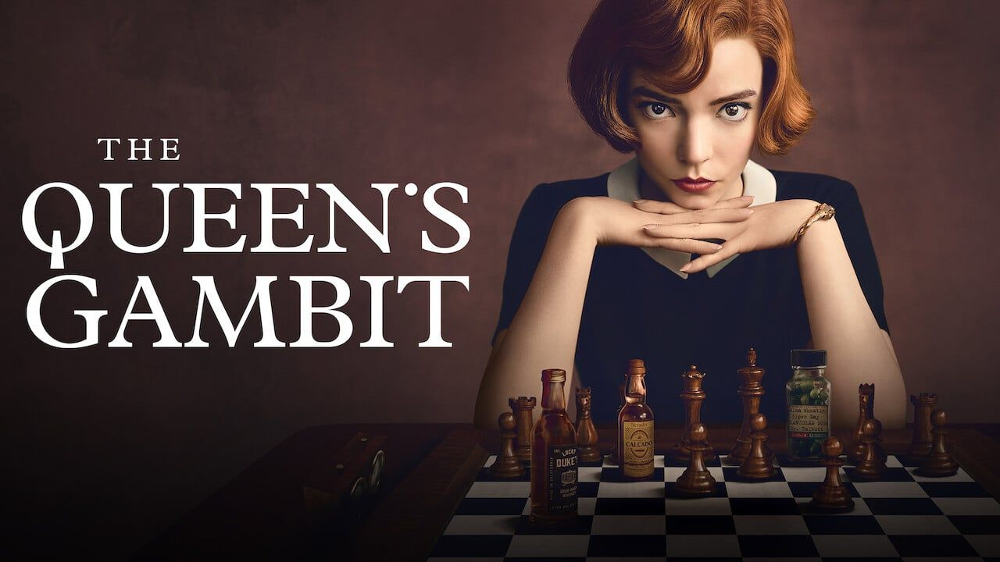

A série bateu recorde de audiência no Netflix,
e contribuiu com um aumento de jogadores,
segundo dados o site chess.com
O MI (Mestre Internacional) mineiro Roberto Molina,
vence o MI Levy Rozman (Gotham Chess),
se tornando o campeão do I'M Not A GM 2021
GM (Grande Mestre) russo Vladislav Artemiev,
surpreendeu ao vencer o Titled Tuesday blitz em
três das ultimas 4 semanas